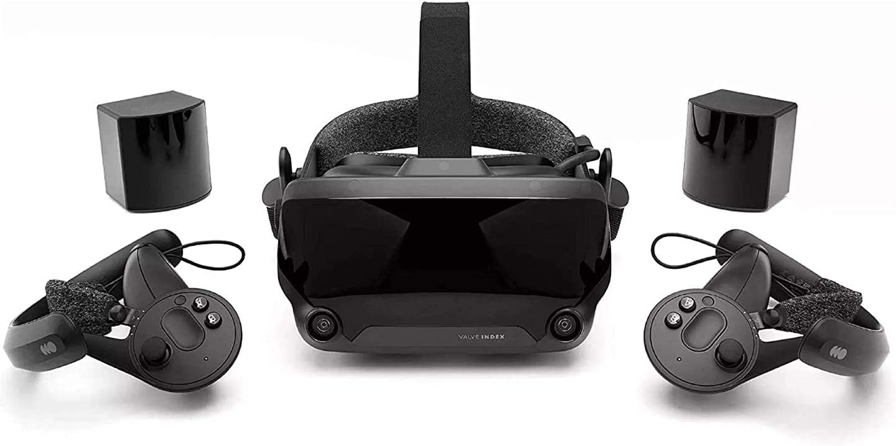

Full Body Tracking
Le Full Body Tracking dans VRChat est le fait de traquer tous sont corps dans le jeux de manière plus ou moins précise. C'est à dire amélioré un set-up composé d'un casque VR et des manettes qui l'accompagnent à un set-up permettant de suivre le mouvement de votre bassin et de vos jambes. Nous allons donc voir les différentes possibilités qui existe.

Valve index
Proposé par Valve l'entreprise détentrice de la plateforme Steam, le Valve Index est un casque de réalité virtuelle permettant le Full Body Tracking dès son achat. Le tracking de votre corps se fait par le biais de 2 bases (qu'il est conseillé de disposé en diagonale dans votre pièce) qui détecte le mouvement de votre corps et celui de vos manettes. Le kit est actuellement à 1079€ et propose donc tous le nécessaire pour joué en VR et avec un tracking de bonne qualité.

Economique
Après le Valve Index je me dois de vous parlez d'une solution plus abordable... Moins efficace mais fonctionnel le Full Body peut très bien se bricolé. Il existe plusieur alternative, on retrouve notamment l'utilisation de Joycon switch, de kinect ou encore de téléphone portable. En effet tous peuvent servir de traqueur et donc une fois configurer correctement avec les bons logiciels imités un Full Body Tracking.

...
Il existe d'autre option, vous voulez partarger se que vous savez sur le Full Body ? Envoyer se que vous avez à un modérateur via notre discord.